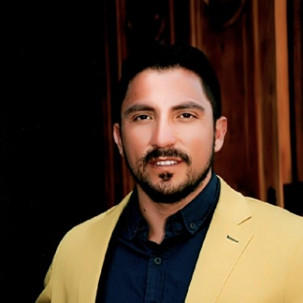

Rodrigo Andrés Ferrada Silva

Resumen
Tecnólogo Médico de profesión, ecografista con pensamiento crítico, autocritico y disruptivo, fusionando la ciencia y tecnología aplicada a la salud humana. Entusiasta de las inversiones y negocios tecnológicos.
Datos Personales
- Nombre: Rodrigo Ferrada Silva.
- Lugar de Nacimiento: Valparaíso, Chile.
- Fecha de Nacimiento: 21 de mayo de 1984.